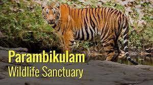
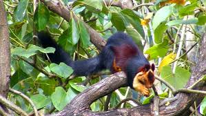
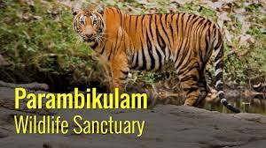
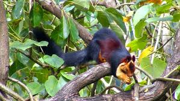
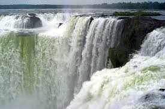
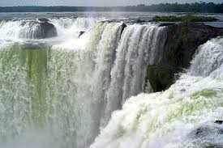

PARAMBIKULAM WILDLIFES SANCTUARY
This place is well known as the best protected ecological park in the country. Parambikulam Wildlife Sanctuary is situated in the Sungam range of hills between the Nelliyampathy – Anamalai landscapes of the Southern Western Ghats in India. It’s a well conserved place enriched with a peninsular flora and fauna. This spectacular hill ranges are seen at an altitude of 300 to 1438 m above the sea level. This tiger reserve is also the home of four different tribes of indigenous people and, you can avail their services as trekking guides. The place is under consideration for selection as a UNESCO World Heritage Site. Parambikulam is also popular as the first scientifically managed teak plantations of the world. It houses the world’s tallest and oldest teak tree named “Kannimara”, which is believed to be 350 years old.
 



 
